Highlighted author(s): Ana Maria Rey
Authors: Edwin Chaparro, Eric Yilun Song, Diego Barberena, James K. Thompson, Ana Maria Rey, Jeremy T. Young
Type: theory · Category: other · PDF: https://arxiv.org/pdf/2605.30815v1
Analysis basis: full PDF text, analyzed in chunks
Topic relevance: 🔥 Tavis-Cummings & cavity-many-emitter 4/5 · 🔥 methods for driven-dissipative 4/5 · Keldysh / 2PI / non-Gaussian methods 3/5 · analog quantum simulation 3/5 · correlated / nonlocal dissipation 3/5 · correlated cavity matter 3/5 · driven-dissipative phase transition 3/5 · exotic spin models in light-matter 3/5 · entanglement & information structure 2/5 · non-equilibrium dynamics 2/5 · non-equilibrium universality 2/5 · quantum measurements 1/5
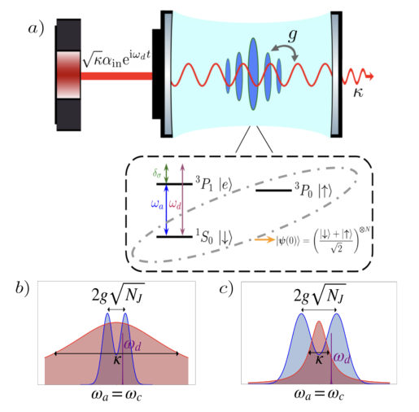
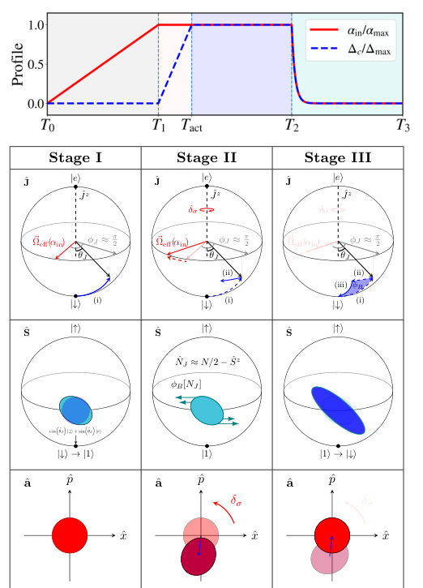
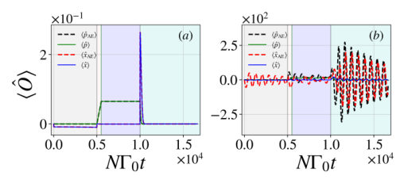
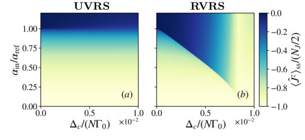
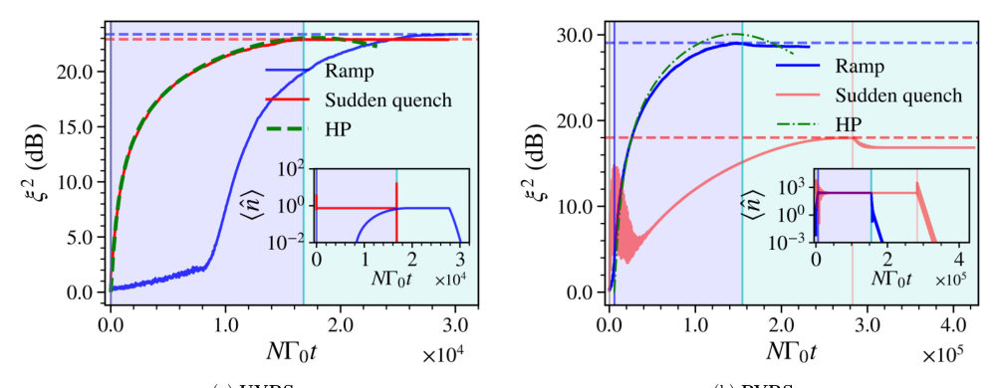
Summary. This paper presents a method to generate high levels of spin squeezing in atomic clocks by utilizing dissipative dynamics in the resolved vacuum Rabi splitting regime. By carefully controlling the system through a multi-stage protocol, the authors show that the cavity photons actively participate in the process without causing decoherence. This establishes a practical and experimentally relevant route to surpass the standard quantum limit in optical clock platforms.
Why it may be interesting. This work is highly relevant as it pushes the boundaries of quantum metrology by showing how to harness complex, non-adiabatic cavity dynamics (RVRS) for high-precision sensing, moving beyond simplified theoretical limits.
Main problem. The paper addresses how to generate spin squeezing in atomic clocks using dissipative dynamics, specifically extending protocols to the resolved vacuum Rabi splitting (RVRS) regime where cavity photons cannot be adiabatically eliminated.
Main result. They demonstrate that symmetry-protected dissipative spin squeezing is achievable in the RVRS regime, achieving theoretical squeezing levels exceeding 25 dB for $10^5$ atoms on a shorter timescale than previously thought possible.
Method. The analysis utilizes the Lindblad master equation, employing techniques like the Dissipative Truncated-Wigner Approximation (DissTWA) and analyzing the accumulation of geometric (Berry) phases.
Model / system. The system is a three-level ensemble of $^{87}\mathrm{Sr}$ atoms coupled to an optical cavity. The dynamics are governed by a master equation incorporating cavity decay and atomic interactions.
Key observables. Spin squeezing ($\xi_2$), geometric phase ($\Phi_B$), and cavity quadrature amplitudes ($\hat{x}, \hat{p}$).
Important parameters / regimes. Resolved Vacuum Rabi Splitting (RVRS) regime, low-photon operating window, and the ratio of cavity decay rate ($\kappa$) to vacuum Rabi splitting ($\Omega_{ ext{VRS}}$).
Assumptions / limitations. The protocol relies on smooth ramps of drive amplitude and detunings to maintain a stable, low-photon operating window that suppresses nonadiabatic excitations and leakage.
Figures summary. Figures illustrate the comparison between the UVRS and RVRS regimes, showing the evolution of cavity quadratures and the three-stage protocol involving drive ramping, detuning, and turning off the drive.
Paper structure. The paper builds by first establishing the general framework for dissipative squeezing, then contrasting the solvable UVRS limit (where adiabatic elimination is valid) with the more complex RVRS limit, detailing a three-stage protocol to realize effective one-axis twisting.
Harnessing dissipation in the presence of strong symmetries has recently emerged as a promising route for generating entanglement in atomic clocks. However, previous proposals relied on regimes where cavity photons can be adiabatically eliminated, significantly limiting their applicability to experimentally relevant cavity-QED regimes that lie in or near the resolved vacuum Rabi splitting regime. Here we show that symmetry-protected dissipative spin squeezing can be realized even when cavity photons actively participate in the dynamics, extending the experimental relevance of the protocol. We study a three-level ensemble of $^{87}\mathrm{Sr}$ atoms coupled to an optical cavity in the resolved vacuum Rabi splitting regime and demonstrate that, with smooth ramps of the drive amplitude and detunings, the driven-dissipative dynamics enters a stable low-photon regime in which nonadiabatic cavity excitations and sector-resolving photon leakage can be controlled. Within this low-photon operating window, sector-resolving photon leakage is suppressed and the sector-dependent geometric phase realizes effective one-axis twisting. At the end of the protocol the entanglement can also be efficiently transferred directly onto the long-lived clock states by turning the drive off. For experimentally realistic parameters, we theoretically show that more than $25\,\mathrm{dB}$ of squeezing can be generated for $10^5$ atoms, closely saturating the ideal one-axis twisting scaling $ξ_{\min}^2 \propto N^{-2/3}$. At fixed cooperativity, the optimized squeezing remains broadly comparable to the unresolved-regime implementation, while the resolved-regime implementation reaches comparable squeezing on a substantially shorter physical timescale. These results establish symmetry-protected dissipative dynamics as a practical route to beyond the standard-quantum-limit performance in optical-clock platforms.
Highlighted author(s): Immanuel Bloch
Authors: Frederic Bippus, Thomas Chalopin, Gabriele Bellomia, Gergő Roósz, Titus Franz, Antoine Georges, Anna Kauch, Immanuel Bloch, Karsten Held
Type: both · Category: strongly correlated electrons · PDF: https://arxiv.org/pdf/2605.31240v1
Analysis basis: full PDF text, analyzed in chunks
Topic relevance: 🔥 analog quantum simulation 4/5 · 🔥 entanglement & information structure 4/5 · Keldysh / 2PI / non-Gaussian methods 2/5 · non-equilibrium dynamics 2/5 · exotic spin models in light-matter 1/5 · methods for driven-dissipative 1/5
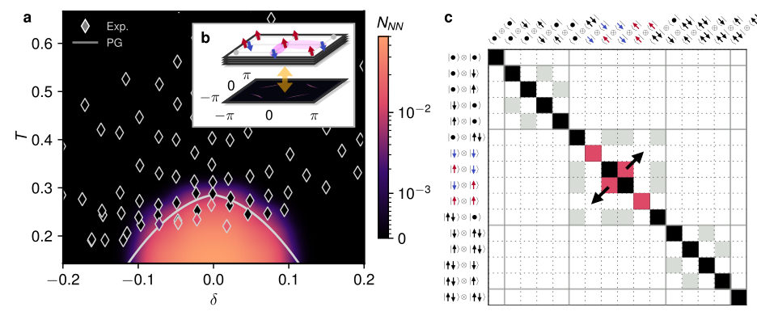
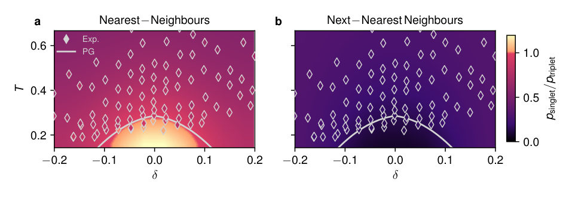
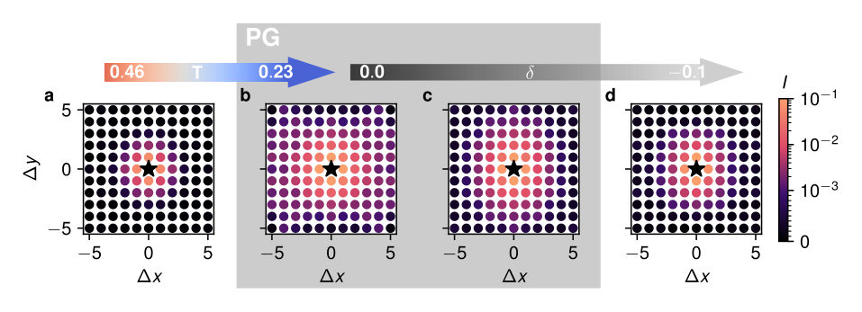
Summary. This work investigates the Fermi-Hubbard model by measuring quantum entanglement, finding that spin-singlet entanglement appears only when the pseudogap opens. This result strongly suggests that the pseudogap physics requires genuine quantum correlations localized at nearest neighbors, ruling out purely classical explanations.
Why it may be interesting. The direct experimental measurement of entanglement in a clean quantum simulator platform provides a powerful, non-equilibrium diagnostic tool to distinguish between quantum and classical physics in strongly correlated materials.
Main problem. To gain a microscopic understanding of the two-dimensional Fermi-Hubbard model, the authors move beyond traditional observables by measuring quantum entanglement.
Main result. They find that spin-singlet entanglement emerges precisely at the onset of the pseudogap regime and is strictly confined to nearest-neighbor sites, disfavoring purely classical fluctuation theories.
Method. The study combines ultracold-atom quantum simulation experiments with advanced numerical calculations using the dynamical vertex approximation (DΓA).
Model / system. The system is the two-dimensional Fermi-Hubbard model, simulated using ultracold atoms in an optical lattice, and analyzed theoretically via the DΓA.
Key observables. SSR negativity (entanglement), spin-singlet/spin-triplet ratio, and mutual information ($I$).
Important parameters / regimes. Pseudogap onset, nearest-neighbor distance, doping ($\delta$), and temperature ($T$).
Assumptions / limitations. The analysis relies on the Superselection Rules (SSR) to restrict entanglement measurements to operationally accessible components.
Figures summary. Figures compare the nearest-neighbor SSR negativity (experiment vs. theory) across temperature and doping, and show the spatial structure of mutual information.
Paper structure. The paper develops the entanglement diagnostic, applies it to the Fermi-Hubbard model across varying parameters, and contrasts the short-range quantum entanglement with longer-range classical correlations.
Despite decades of intense theoretical and experimental investigation, the two-dimensional Fermi-Hubbard model still resists a complete microscopic understanding. Conventional approaches typically probe global observables and locally resolved correlation functions. Here, we develop a complementary perspective based on the measurement of entanglement. Using both an ultracold-atom quantum simulator and numerical simulations based on the dynamical vertex approximation, we find that entanglement is closely tied to the onset of the enigmatic pseudogap regime: spin-singlet entanglement emerges only as the pseudogap sets in and, in contrast to classical correlations, remains confined to nearest-neighbour sites in this regime. Our results, therefore, disfavour purely classical-fluctuation theories of the pseudogap and constrain microscopic models to those that develop nearest-neighbour spin-singlet entanglement at the pseudogap onset.
Authors: Shuai Yin
Type: theory · Category: statistical mechanics · PDF: https://arxiv.org/pdf/2605.30938v1
Analysis basis: full PDF text, analyzed in chunks
Topic relevance: 🔥 non-equilibrium universality 5/5 · 🔥 non-equilibrium dynamics 4/5 · analog quantum simulation 3/5 · driven-dissipative phase transition 3/5 · methods for driven-dissipative 2/5 · Keldysh / 2PI / non-Gaussian methods 1/5 · correlated / nonlocal dissipation 1/5 · entanglement & information structure 1/5
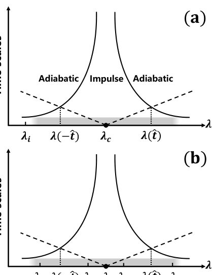
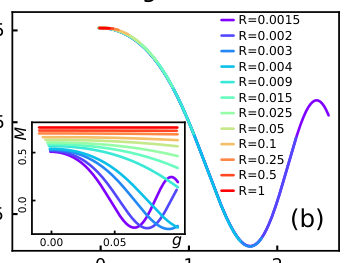
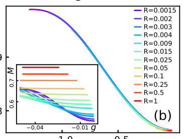
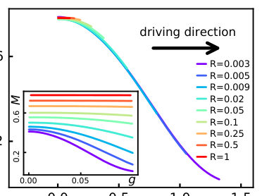
Summary. This paper introduces a generalized Finite-Time Scaling (FTS) framework to provide a universal theory for non-equilibrium critical dynamics. It successfully unifies the Kibble-Zurek and De Grandi-Gritsev-Polkovnikov scaling limits by extending the theory to handle arbitrary driving rates within the critical region. This has broad implications for interpreting results from quantum quench experiments.
Why it may be interesting. This work provides a powerful, generalized theoretical tool for characterizing non-equilibrium dynamics in quantum systems, directly applicable to experimental quench protocols in AMO physics.
Main problem. To develop a universal description for nonequilibrium critical dynamics in quantum many-body systems that overcomes the rate limitations of existing scaling theories like Kibble-Zurek (KZ) and De Grandi-Gritsev-Polkovnikov (DGP).
Main result. The authors propose a generalized Finite-Time Scaling (FTS) framework that unifies the scaling behavior across the full range of driving rates within the critical region, valid regardless of the quench rate magnitude.
Method. The theory involves developing and applying a generalized FTS form, which is then rigorously verified through numerical simulations.
Model / system. The theory is tested on quantum many-body systems, specifically using the quantum Ising critical point and the Ising tricritical point.
Key observables. Topological defect density ($n$) and the scaling behavior of a macroscopic quantity $P$.
Important parameters / regimes. Driving rate ($R$), initial parameter ($\lambda_i$), final parameter ($\lambda_f$), and the critical point ($\lambda_c$).
Assumptions / limitations. The generalized FTS is derived specifically for the case where the entire dynamic process, including initial and final states, remains within the critical region.
Figures summary. Figures illustrate the comparison between conventional KZ dynamics (which requires rate bounds) and the generalized FTS applicable within the critical region, showing data collapse for both the quantum Ising and tricritical points.
Paper structure. The paper first identifies the limitations of existing scaling theories, then develops the generalized FTS framework, and finally verifies this unified theory through numerical simulations on specific quantum critical models.
The pursuit of a universal description for nonequilibrium critical dynamics in quantum many-body systems stands as a central frontier in modern statistical physics. For driven critical dynamics starting far from the critical point, the well-known Kibble-Zurek (KZ) scaling holds only when the driving rate lies below an upper bound. Here we study driven dynamics restricted to the critical region, and show that robust dynamic scaling behavior exists for arbitrary driving rates. We develop a generalized finite-time scaling (FTS) framework, which provides a unified understanding on the driven dynamics for the full range of quench rates, bridging the KZ scaling in the slow-driving regime and the De~Grandi-Gritsev-Polkovnikov (DGP) scaling in the sudden-quench limit. We verify this unified FTS form through numerical simulations in both quantum critical and tricritical points. The good agreement between theoretical predictions and numerical results confirms the generality of our theory. Our work establishes a universal theory for nonequilibrium critical dynamics spanning the full range of driving rates, with broad implications for quantum quench experiments and out-of-equilibrium statistical mechanics.
Authors: Miguel A. Cazalilla
Type: theory · Category: quantum gases · PDF: https://arxiv.org/pdf/2605.30746v1
Analysis basis: full PDF text, analyzed in chunks
Topic relevance: 🔥 driven-dissipative phase transition 4/5 · 🔥 non-equilibrium universality 4/5 · analog quantum simulation 3/5 · correlated / nonlocal dissipation 3/5 · methods for driven-dissipative 3/5 · non-equilibrium dynamics 3/5 · Keldysh / 2PI / non-Gaussian methods 2/5 · Kondo & dissipative impurity 2/5 · Frenkel-Kontorova 1/5 · entanglement & information structure 1/5
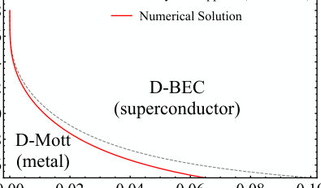
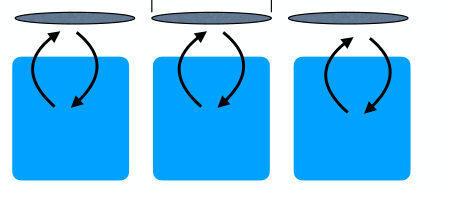
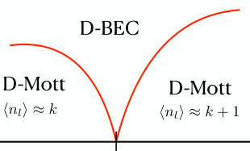
Summary. This paper theoretically studies the superconductor-metal transition in 1D interacting bosons coupled to an Ohmic bath. Using advanced techniques like bosonization and RG analysis, the authors map the system to an effective field theory, predicting the critical transition belongs to the Wilson-Fisher universality class. It provides a deep understanding of how dissipation stabilizes different quantum phases in low-dimensional quantum matter.
Why it may be interesting. This work provides a detailed theoretical framework for understanding how dissipation fundamentally alters quantum phase transitions in low-dimensional systems, connecting microscopic models to universal critical behavior.
Main problem. The paper investigates the quantum phase transition between a superconducting state (D-BEC) and a metallic state (D-Mott) in one-dimensional interacting bosons subjected to Ohmic quantum dissipation.
Main result. The critical transition belongs to the Wilson-Fisher universality class with a dynamical exponent $z \approx 2$. The system exhibits distinct behaviors depending on the doping level and dissipation strength.
Method. The analysis combines analytical techniques, including bosonization, renormalization group (RG) flow equations, and mapping the system to an effective nonlinear sigma model (NL$\sigma$M) or dissipative Ginzburg-Landau theory.
Model / system. The model consists of interacting bosons (Cooper pairs) hopping on a 1D lattice, coupled to a dissipative bath via onsite phase dissipation (Josephson tunneling). The system is analyzed in the continuum limit as an array of weakly coupled bosonic puddles.
Key observables. Phase coherence (long-range vs. exponentially decaying), compressibility ($\chi$), and the correlation function $G_ heta(x, au)$.
Important parameters / regimes. Dissipation strength ($\alpha$), inter-puddle Josephson coupling ($J$), and doping level.
Assumptions / limitations. The analysis relies on perturbative expansions in the coupling constants and utilizes continuum approximations (e.g., deriving the NL$\sigma$M).
Figures summary. Figures illustrate the phase diagram showing the boundary between the D-BEC and D-Mott phases, and show the decay of correlation functions in different regimes.
Paper structure. The paper progresses from defining the microscopic Hamiltonian and action, through bosonization and RG analysis of the continuum limit, to deriving effective field theories like the dissipative TDGL theory, and finally calculating correlation functions in the ordered and disordered phases.
The phase diagram of a system of interacting bosons (Cooper pairs) hoping on a one-dimensional (1D) lattice with onsite phase dissipation describing the Josephson tunneling to a nearby diffusive normal-metal electrode is studied. Starting from the system at commensurate lattice filling, it is shown by a combination of analytical techniques that the phase diagram contains two quantum phases: A dissipative Bose-Einstein condensate (D-BEC) or superconductor with long-range phase coherence, and a dissipative Mott insulator (D-Mott) or "metal" with exponentially decaying phase correlations in space and local imaginary-time correlations decaying as the local pairing correlations of the electrode. The D-Mott/metal phase can be described as a 1D array of dissipative boson puddles, weakly coupled by Josephson tunneling. The puddle size roughly corresponds to the length scale beyond which phase slips suppress phase coherence. The dissipative time-dependent Ginsburg-Landau theory phenomenologically used by Sachdev, Werner, and Troyer [Phys. Rev. Lett. {\bf 92} 237003 (2004)] for the superconductor-metal transition in quasi-1D wires is derived from this microscopic puddle picture. Thus, the criticality of the D-Mott/D-BEC transition is shown to belong to the Wilson-Fisher universality class with dynamical exponent $z\approx 2$. At small doping, the D-Mott/metal phase remains stable due to its finite compressibility, which is computed to leading order in a perturbation expansion of the dissipation strength and the inter-puddle Josephson coupling. At larger doping, using a mapping to a pseudospin chain combined with bosonization, the D-BEC/superconductor phase is the ground state for non-vanishing but arbitrarily small dissipation. Similarities and differences with deconfinement transition of an array 1D bosonic Mott insulators in anisotropic optical lattices are also discussed.
Authors: Sasanka Dowarah, Abeda Sultana Shamma, Yazdan Maghsoud, G. Andrés Cisneros, Michael Kolodrubetz
Type: theory · Category: quantum information and computing · PDF: https://arxiv.org/pdf/2605.30572v1
Analysis basis: full PDF text, analyzed in chunks
Topic relevance: 🔥 methods for driven-dissipative 4/5 · 🔥 non-equilibrium dynamics 4/5 · Keldysh / 2PI / non-Gaussian methods 3/5 · analog quantum simulation 3/5 · correlated / nonlocal dissipation 3/5 · driven-dissipative phase transition 3/5 · Kondo & dissipative impurity 2/5 · non-equilibrium universality 2/5 · entanglement & information structure 1/5
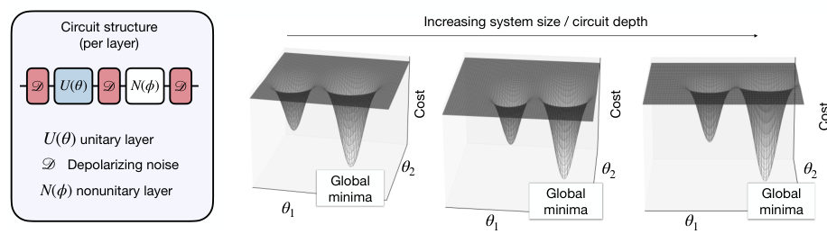
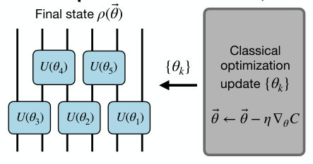
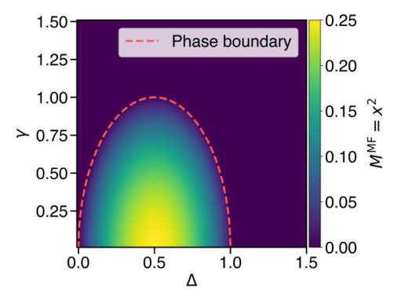
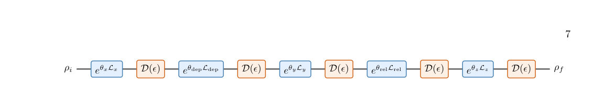
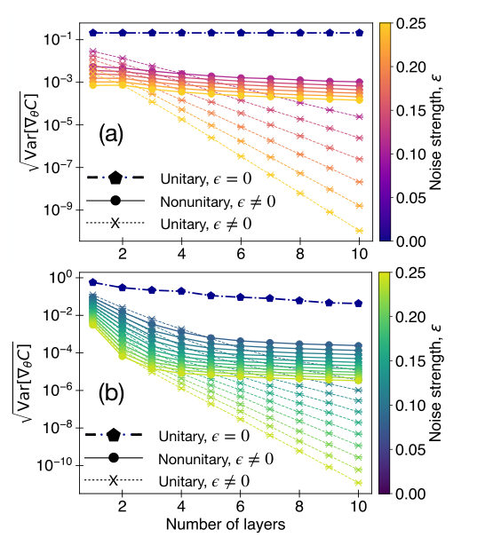
Summary. This paper tackles the critical issue of Noise-Induced Barren Plateaus in VQAs used for open quantum systems. By incorporating nonunitary, dissipative elements into the variational ansatz, the authors demonstrate a scalable method that maintains gradient flow. This technique is successfully applied to simulate electron transport in molecular junctions, showing a path forward for quantum simulation on NISQ hardware.
Why it may be interesting. This work directly addresses a major bottleneck in near-term quantum simulation—the vanishing gradients caused by noise—by proposing a physically motivated modification to the variational ansatz suitable for open quantum dynamics.
Main problem. The primary challenge is mitigating Noise-Induced Barren Plateaus (NIBPs) in Variational Quantum Algorithms (VQAs) when simulating open quantum systems on noisy hardware.
Main result. Introducing nonunitary elements into the variational ansatz successfully restores finite gradients, enabling convergence to the correct non-equilibrium steady state, even in the presence of depolarizing noise.
Method. The authors employ nonunitary variational ansätze, which incorporate tunable dissipative channels alongside unitary generators, and analyze the deep circuit limit using a Floquet-type construction.
Model / system. The work uses an infinite-range dissipative Ising model as a benchmark, and extends the method to simulate electron transport through the OPE-SMe molecular junction, governed by a Lindblad master equation.
Key observables. Steady-state charge currents ($I_{ ext{measured}}$), order parameters ($M_F$), and the vanishing/finite nature of the cost function gradients.
Important parameters / regimes. Depolarizing noise strength ($\epsilon$), circuit depth ($L$), and system parameters derived from QM/MM calculations.
Assumptions / limitations. The nonunitary elements are constrained to be Completely Positive and Trace Preserving (CPTP); the analysis often relies on mean-field approximations or zero-noise extrapolation.
Figures summary. Figures compare gradient variance for unitary vs. nonunitary ansätze under noise, and illustrate the circuit implementation of dissipative channels and the final molecular transport setup.
Paper structure. The paper first establishes the problem of NIBPs using the Ising model, demonstrates the nonunitary ansatz solution, analyzes the deep circuit limit via Floquet theory, and finally applies the robust method to the realistic OPE-SMe molecular electronic transport problem.
Variational quantum algorithms (VQAs) offer a promising route toward simulating many-body quantum systems on noisy intermediate-scale quantum (NISQ) hardware. However, their scalability is severely limited by noise-induced barren plateaus (NIBPs), where hardware noise causes the gradients of the cost function to vanish exponentially with circuit depth, rendering optimization impossible. In this work, we demonstrate that introducing nonunitary elements into the variational ansatz can mitigate NIBPs in open-quantum systems. Using an analytically tractable infinite-range dissipative Ising model, we show that a nonunitary ansatz restores finite gradients in the presence of depolarizing noise, enabling convergence to the correct symmetry-broken steady state. We also develop a Floquet-type variational ansatz in which each layer repeats the same parameters, reducing the deep variational circuit to an effective quantum channel whose fixed points can be analyzed directly. We then extend these ideas to a realistic quantum-chemistry system by simulating electron transport through Oligophenylethynylene-sulfurmethyl (OPE-SMe) using Hamiltonians and jump operators of the model derived from first-principles polarizable QM/MM calculations. Our results show that nonunitary variational ansätze provide a scalable and physically grounded route for simulating open-system steady states on NISQ hardware, offering a pathway to overcoming one of the limitations of current quantum hardware.
Authors: Banumathy Manickam, Anil Shaji
Type: theory · Category: statistical mechanics · PDF: https://arxiv.org/pdf/2605.31319v1
Analysis basis: full PDF text, analyzed in chunks
Topic relevance: 🔥 measurement-induced transitions 4/5 · 🔥 quantum measurements 4/5 · correlated / nonlocal dissipation 3/5 · driven-dissipative phase transition 3/5 · non-equilibrium dynamics 3/5 · methods for driven-dissipative 2/5 · non-equilibrium universality 2/5 · Keldysh / 2PI / non-Gaussian methods 1/5
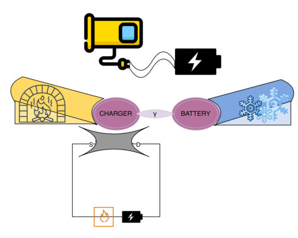
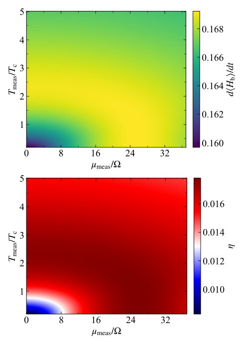
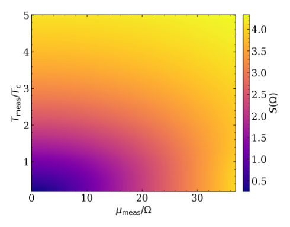
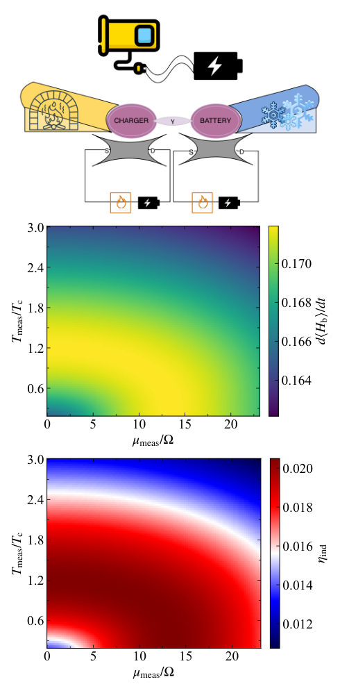
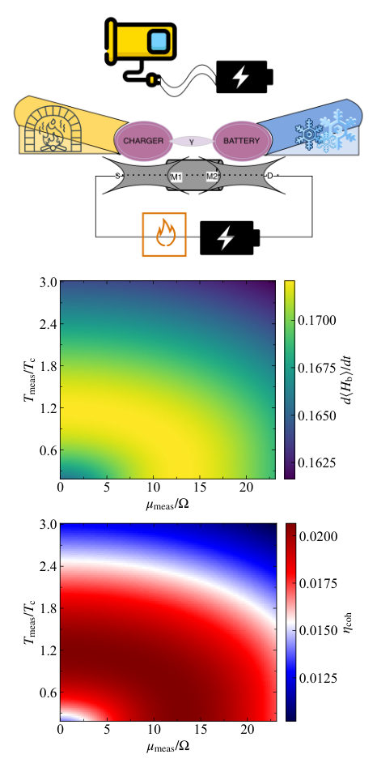
Summary. This theoretical study analyzes how weak, continuous measurements using Quantum Point Contacts (QPCs) enhance the energy charging rate in a two-qubit quantum battery. The authors compare single, independent, and coherently coupled measurement schemes. They find that implementing a coherent measurement across both qubits yields the optimal enhancement with the lowest associated resource cost.
Why it may be interesting. This work directly addresses non-equilibrium thermodynamics and measurement back-action, showing how engineered measurement coupling can optimize energy transfer processes beyond simple thermal driving.
Main problem. The paper investigates how weak, continuous quantum measurements enhance the charging rate of a quantum battery system while quantifying the associated thermodynamic resource cost.
Main result. A coherent measurement scheme coupling both the charger and battery qubits provides the highest charging rate enhancement (13.64%) while requiring the lowest resource expenditure compared to single or independent measurements.
Method. The analysis uses the Born and Markov approximations to derive a Lindblad master equation incorporating measurement back-action from Quantum Point Contacts (QPCs).
Model / system. The system is a two-qubit charger-battery model coupled to thermal reservoirs and subjected to weak, continuous measurements via QPCs. The dynamics are governed by a master equation incorporating measurement-induced dissipators and energy shifts.
Key observables. Charging rate enhancement ($\eta$), energy flow rate from charger to battery, and the resource cost (temperature/potential gradients) required for measurement.
Important parameters / regimes. Temperature gradient ($T_{ ext{meas}}/T_c$) and chemical potential gradient ($\mu_{ ext{meas}}/\Omega$) driving the QPCs.
Assumptions / limitations. The analysis relies on the Born and Markov approximations, and Lamb shift terms are often ignored in final simulations as they represent virtual processes.
Figures summary. Figures illustrate the non-monotonic dependence of the charging rate enhancement on measurement strength parameters, and compare the performance of single, independent two-QPC, and coherent two-QPC measurement setups.
Paper structure. The paper builds from deriving the general open evolution master equation, introducing the QPC measurement Hamiltonian, analyzing the non-monotonic enhancement, and finally comparing the performance hierarchy across the three measurement configurations.
Quantum batteries modeled as two-qubit systems coupled to Markovian thermal reservoirs have been shown to benefit from measurement-assisted charging, where projective measurements enhance the charging rate at an infinite thermodynamic resource cost. In this work, we consider weak, continuous measurements implemented via quantum point contact detectors (QPC), which enhance the charging rate at a definite and quantifiable resource cost. We analyze three measurement configurations namely, a single QPC, two independent QPCs, and a series-coupled (coherent) two-QPC scheme, and study their effect on the steady-state charging rate, defined as the rate of energy flow from the charger qubit to the battery qubit, relative to the unmeasured baseline. We find that the charging rate enhancement is non-monotonic as a function of the temperature gradient and potential gradient required to drive the QPCs, exhibiting a plateau of near-optimal enhancement. Comparing the three configurations, the plateau of optimal enhancement contracts toward lower temperature and chemical potential for both the cases with two QPCs compared to the single QPC case. The coherent measurement further shows a lowering of the resource requirement relative to the two independent QPC case for achieving the same enhancement. The hierarchy is coherent greater than two independent QPCs which is greater than single QPC with respect to both the magnitude of the charging rate enhancement and the minimization of measurement resources.
Authors: Grover Andrade Sánchez, Arturo Camacho Guardian
Type: theory · Category: quantum gases · PDF: https://arxiv.org/pdf/2605.31255v1
Analysis basis: full PDF text, analyzed in chunks
Topic relevance: 🔥 Keldysh / 2PI / non-Gaussian methods 4/5 · Kondo & dissipative impurity 3/5 · analog quantum simulation 3/5 · methods for driven-dissipative 3/5 · correlated / nonlocal dissipation 2/5 · non-equilibrium dynamics 2/5 · driven-dissipative phase transition 1/5 · non-equilibrium universality 1/5
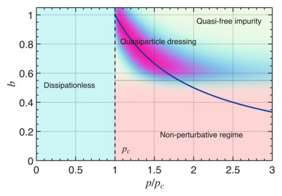
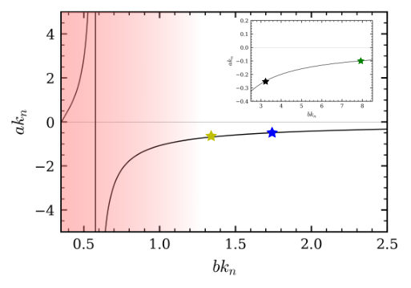
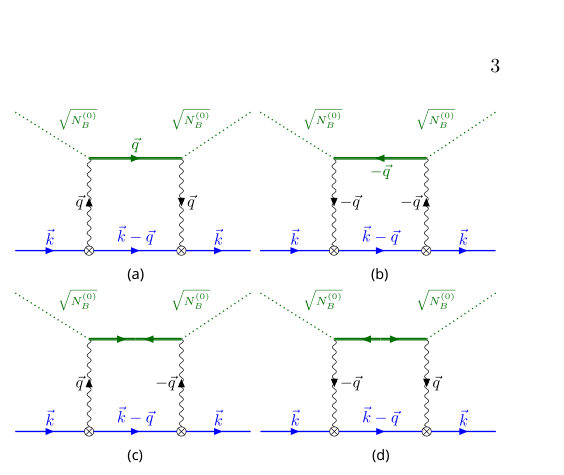
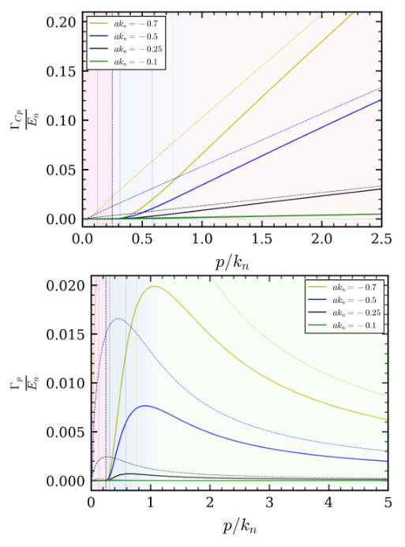
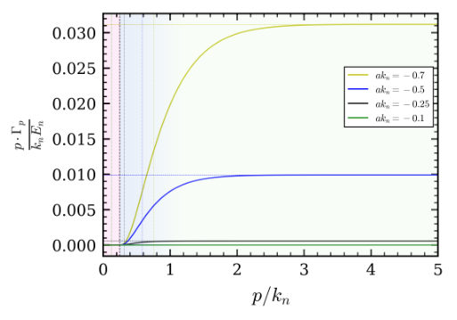
Summary. This paper theoretically examines how charged impurities (polarons) behave in a Bose-Einstein Condensate at finite momentum. By using a diagrammatic approach, the authors show that incorporating the finite range of the ion-atom interaction fundamentally changes the predicted damping rate compared to simple contact models. The key finding is the emergence of a characteristic momentum scale and a physically realistic high-momentum decay law ($\Gamma_p \sim 1/p$).
Why it may be interesting. This work is highly relevant as it provides detailed, momentum-resolved predictions for impurity dynamics in quantum gases, offering a crucial theoretical benchmark for interpreting future momentum-resolved transport measurements in ultracold atomic systems.
Main problem. The study investigates the finite-momentum behavior of charged Bose polarons, moving beyond static properties to understand transport and quasiparticle stability.
Main result. The finite-range ion-atom interaction leads to a non-monotonic damping rate peaking at a characteristic momentum scale, and crucially, predicts a high-momentum scaling law $\Gamma_p \sim 1/p$, unlike contact interaction predictions.
Method. The analysis employs a diagrammatic approach using imaginary-time Green's functions and perturbative calculations up to second order in the ion-boson coupling.
Model / system. The system models a charged impurity (ion) coupled to a Bose-Einstein Condensate (BEC) of bosons. The Hamiltonian includes terms for kinetic energy, boson-boson interaction, and the ion-boson coupling potential.
Key observables. Quasiparticle energy ($\omega_p$), damping rate ($\Gamma_p$), and quasiparticle residue ($Z_p$).
Important parameters / regimes. Momentum ($p$), interaction range scale ($b$), and the boson-boson scattering length ($a_{BB}$).
Assumptions / limitations. The analysis is restricted to weak coupling and perturbative treatment up to second order; it assumes the BEC is well-described by Bogoliubov theory.
Figures summary. Figures illustrate the non-monotonic dependence of $\Gamma_p$ and $\Delta E$ on momentum, the scaling $\Gamma_p \propto 1/p$ at high momentum, and the dependence of the residue $Z$ on the boson-boson scattering length $a_{BB}$.
Paper structure. The paper develops the theory by calculating the self-energy ($\Sigma_2$) via Feynman diagrams, determining quasiparticle properties from the Green's function poles, and comparing the results obtained using a realistic finite-range potential versus a simple contact interaction.
Charged impurities in quantum fluids have unveiled new classes of strongly correlated many-body states across condensed matter, ultracold gases, and hybrid atom-ion platforms. While previous studies have primarily focused on their ground-state and static properties, much less is known about their finite-momentum behavior, which governs transport, dissipation, and quasiparticle stability. Here, we investigate the momentum-dependent properties of a charged Bose polaron using a diagrammatic approach within second-order perturbation theory, explicitly accounting for the finite-range nature of the ion-atom interaction. We show that the interaction range introduces a characteristic momentum scale at which many-body dressing and dissipation are maximized, leading to a non-monotonic behavior of the damping rate and quasiparticle energy. In the high-momentum regime, we uncover a scaling law $Γ_p \sim 1/p$, signaling the suppression of many-body dressing and the recovery of quasi-free impurity dynamics, in stark contrast to the divergent behavior predicted by contact-interaction perturbative treatments.
Authors: Vincenzo Bruno, Corinna Kollath, Roberta Citro, Ameneh Sheikhan
Type: theory · Category: other · PDF: https://arxiv.org/pdf/2605.31592v1
Analysis basis: full PDF text, analyzed in chunks
Topic relevance: 🔥 non-equilibrium dynamics 4/5 · analog quantum simulation 3/5 · driven-dissipative phase transition 2/5 · interference shaping light 2/5 · methods for driven-dissipative 2/5 · non-equilibrium universality 2/5 · Keldysh / 2PI / non-Gaussian methods 1/5 · Kondo & dissipative impurity 1/5
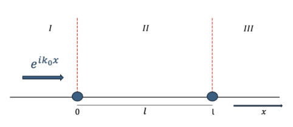
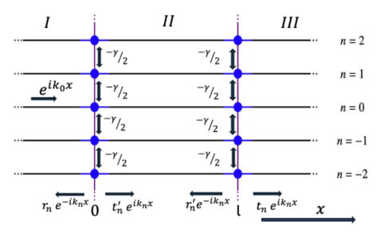
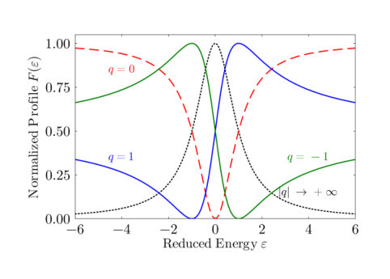
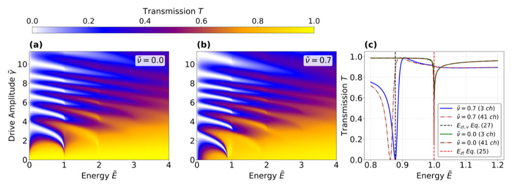
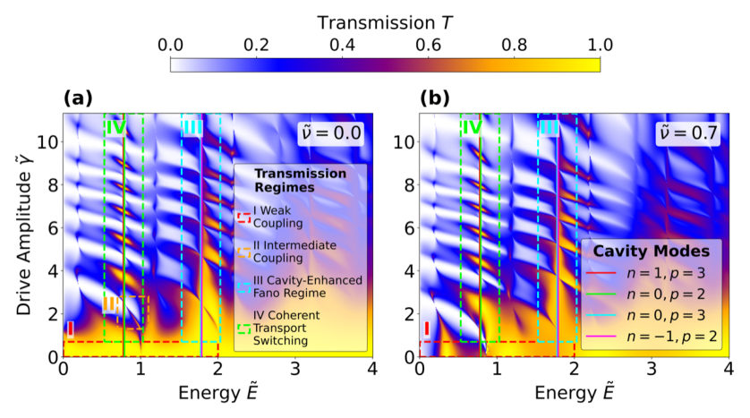
Summary. This work uses Floquet engineering to study quantum transport through two driven impurities in a 1D channel. By mapping the time-dependent problem to a multi-channel scattering model, the authors reveal that the system's transport properties are governed by the interplay of Fabry-Pérot cavity modes and Fano interference. This allows for the active control of quantum states, enabling programmable delay lines and robust coherent trapping mechanisms.
Why it may be interesting. The combination of Floquet engineering, cavity physics, and resonance phenomena (Fano/BIC) makes this highly relevant for AMO physicists working on engineered quantum systems, especially those involving cold atoms.
Main problem. The paper investigates how periodically driving two impurities in a 1D channel modifies quantum transport, leading to complex interference and trapping phenomena.
Main result. The system exhibits tunable transport regimes, allowing switching between perfect transparency/reflection and strong localization via Quasi-Bound States (Quasi-BICs) with giant Wigner time delays.
Method. The time-dependent Hamiltonian is mapped onto a time-independent, multi-channel scattering problem using Floquet theory.
Model / system. The model is a mesoscopic 1D channel containing two impurities, whose potentials are periodically driven by an external field. The analysis uses the Floquet formalism to solve the resulting multi-channel scattering problem.
Key observables. Reflection and transmission amplitudes, Bound States in the Continuum (BICs), Quasi-BICs, and Wigner time delays.
Important parameters / regimes. Inter-impurity distance ($l$), drive amplitude ($\gamma$), and static potentials ($ u$).
Assumptions / limitations. The analysis relies on mapping the time-dependent problem to a stationary multi-channel scattering problem using Floquet theory, though approximations are noted for high-order channels.
Figures summary. Figures illustrate the 1D system setup, the multi-channel scattering diagram, and spectral shapes showing Fano resonance profiles (dip-peak vs. peak-dip) and transmission probability vs. energy.
Paper structure. The paper progresses from analyzing the single-impurity case (showing Fano resonances) to the two-impurity system, which is treated as a dynamical Fabry-Pérot cavity, culminating in the demonstration of tunable trapping and delay lines.
Floquet engineering offers powerful tools to manipulate quantum states by periodically driving physical parameters. In this work, we investigate the quantum transport through two periodically driven impurities in a mesoscopic one-dimensional channel. By mapping the time-dependent Hamiltonian into an effective multichannel scattering problem, we unveil a rich landscape of transport phenomena arising from the interplay between Fabry-Perot cavity modes and Fano interference. We demonstrate that the inter-impurity distance acts as a critical control parameter, allowing for the formation of Bound States in the Continuum (BICs). Furthermore, we identify Quasi-BICs, extremely narrow resonances with finite lifetimes, that can be dynamically tuned by the drive amplitude. We show that these states enable a robust coherent trapping mechanism, allowing the system to switch from perfect transparency or reflection to strong localization with giant Wigner time delays. Our results suggest possible applications for tunable delay lines and quantum memories, with feasible experimental realizations in the context of cold atoms.
Authors: Robin Thomm, Vinay Shankar, Natalia Kuk, Marion Mallweger, Ivo Straka, Markus Hennrich
Type: experiment · Category: other · PDF: https://arxiv.org/pdf/2605.30483v1
Analysis basis: full PDF text, analyzed in chunks
Topic relevance: 🔥 analog quantum simulation 4/5 · QC/QI experiment 3/5 · Rydberg arrays 3/5 · methods for driven-dissipative 2/5 · driven-dissipative phase transition 1/5 · entanglement & information structure 1/5 · non-equilibrium dynamics 1/5 · quantum measurements 1/5 · quantum optics experiment 1/5
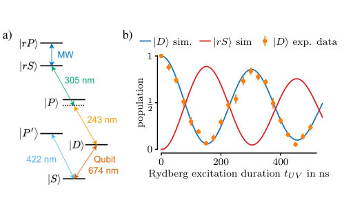
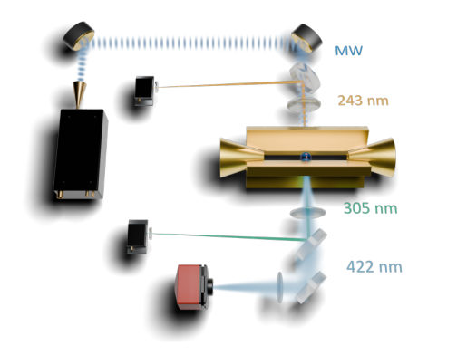
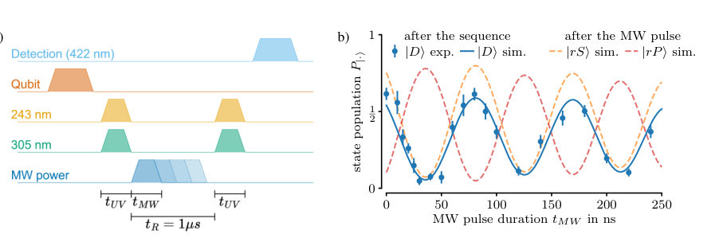
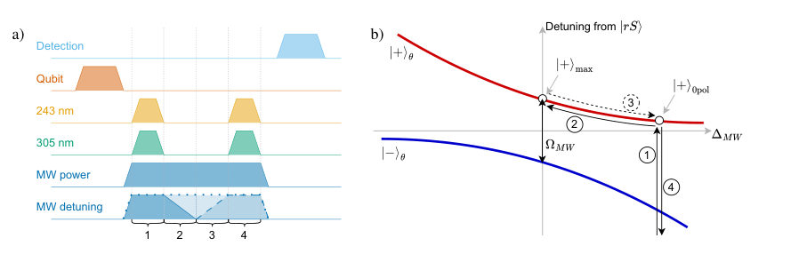
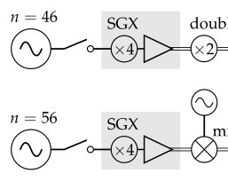
Summary. This paper reports the first demonstration of coherent population transfer between multiple Rydberg states in a trapped ion. By using microwave dressing, the researchers engineered new eigenstates with tunable properties, allowing for both noise-resilient excitation and strong dipole-dipole interactions in a single sequence. This significantly expands the toolbox for quantum simulation and quantum information processing using trapped ions.
Why it may be interesting. This work provides a robust, controllable platform for quantum simulation by enabling fast, coherent switching between states with vastly different polarizabilities and interaction strengths, crucial for advanced quantum simulation protocols.
Main problem. The primary goal was to demonstrate coherent population transfer between different Rydberg states of a trapped ion, overcoming previous limitations of using only a single state per experiment.
Main result. The authors achieved a high population transfer efficiency (91.5%) in a single microwave $\pi$-pulse and demonstrated adiabatic transfer between engineered zero-polarizability and maximally interacting dressed states.
Method. The work combines microwave dressing/driving with precise laser control to manipulate the quantum states of trapped ions, probing both Rabi oscillations and adiabatic passage.
Model / system. The physical system is a trapped $^{88} ext{Sr}^+$ ion. The dynamics are modeled using the Lindblad master equation, describing interactions between bare Rydberg states ($rS, rP$) and engineered dressed states ($|+ angle, |- angle$) via microwave coupling.
Key observables. Population transfer efficiency, Rabi oscillation frequencies ($\Omega_{MW}$), and the fidelity of adiabatic passage.
Important parameters / regimes. Rydberg principal quantum number ($n=46$), microwave detuning ($\Delta_{MW}$), and state lifetimes ($ au_{rS} = 8.2 \mu s$).
Assumptions / limitations. The primary limitations noted are Rydberg state dephasing, blackbody radiation induced decay, and non-adiabatic loss mechanisms during sweeping.
Figures summary. Figures illustrate the experimental setup, Rabi oscillations between D and $rS$, the pulse sequence for state manipulation, and the dependence of adiabatic transfer efficiency on the microwave detuning.
Paper structure. The paper details the experimental setup, first demonstrating Rabi oscillations between bare states, then introducing microwave dressing to create tunable eigenstates, and finally demonstrating adiabatic transfer between these engineered dressed states.
Microwave dressing of Rydberg ions creates tunable eigenstates with controllable polarizability and interaction strength, but coherent navigation between these states has remained elusive. Here, we report on the first demonstration of coherent population transfer between different Rydberg states of a trapped ion. We investigate both microwave-mediated Rabi oscillations between Rydberg S and P states and adiabatic transfer between microwave-dressed Rydberg states. Between Rydberg S and P states we achieve a population transfer efficiency of 91.5(5)% in a single microwave $π$-pulse. Microwave dressing hybridizes the S and P Rydberg states into new eigenstates with tunable polarizability, enabling both noise-resilient zero-polarizability states and maximally interacting states. We demonstrate adiabatic transfer between these zero-polarizability and maximally dressed states, enabling experiments that combine noise-resilient excitation with strong dipole-dipole interactions and Förster resonance control within a single measurement sequence.
Authors: Jonas Köglmayr, Florian Sammüller, Matthias Schmidt
Type: theory · Category: statistical mechanics · PDF: https://arxiv.org/pdf/2605.31479v1
Analysis basis: full PDF text, analyzed in chunks
Topic relevance: 🔥 non-equilibrium dynamics 4/5 · 🔥 non-equilibrium universality 4/5 · Keldysh / 2PI / non-Gaussian methods 2/5 · methods for driven-dissipative 2/5 · Frenkel-Kontorova 1/5 · correlated / nonlocal dissipation 1/5 · driven-dissipative phase transition 1/5
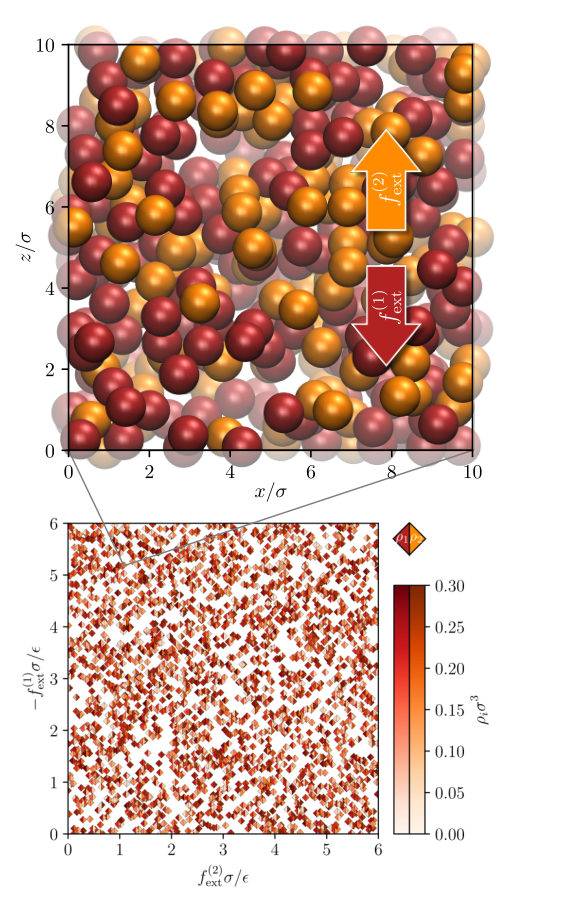
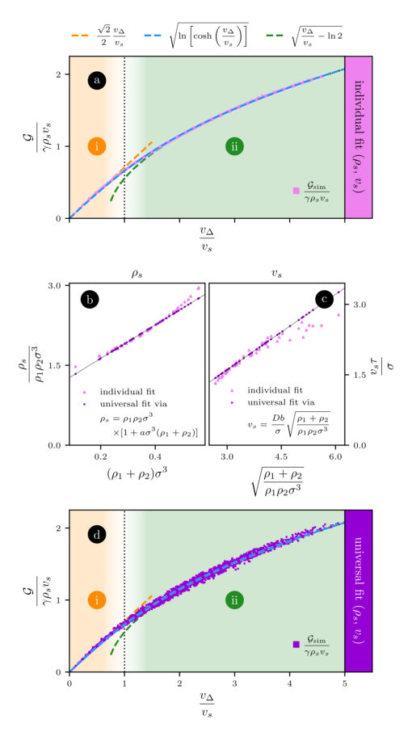
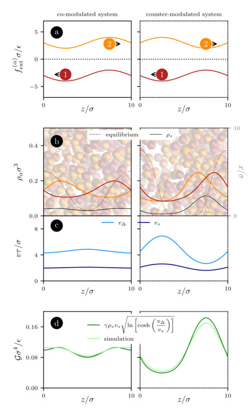
Summary. This paper develops a theoretical framework to quantify the nonequilibrium drag force in counterdriven fluid mixtures. Using power functional scaling arguments, the authors derive a universal scaling law that accurately describes the transition between linear and square-root force dependencies. This work advances the understanding of non-equilibrium physics beyond standard density functional theory.
Why it may be interesting. The development of a universal scaling law for non-equilibrium forces in driven classical fluids provides a powerful, generalizable theoretical tool for understanding energy dissipation and transport in complex many-body systems, which has analogues in quantum many-body dynamics.
Main problem. To establish a quantitative scaling law describing the effective nonequilibrium drag force field in steady states of counterdriven binary fluid mixtures.
Main result. The study successfully derives a universal power functional scaling form that captures the crossover between near-equilibrium linear response and far-nonequilibrium square root asymptotics.
Method. The authors employ power functional scaling arguments applied to adaptive Brownian dynamics computer simulations, extending classical density functional theory concepts.
Model / system. The system is a binary fluid mixture ($\alpha=1, 2$) subjected to external forces driving the species in opposite directions (counterdriven). The dynamics are modeled using overdamped Brownian dynamics.
Key observables. Partial density profiles ($ ho_\alpha(r)$), partial interparticle force density ($F_{\alpha}^{ ext{int}}(r)$), and the drag force characterized by $G^{ ext{int}}(z)$.
Important parameters / regimes. The counterflow velocity difference ($v_\Delta$), the crossover velocity ($v_s$), and the effective density ($ ho_s$) are key parameters defining the scaling regimes.
Assumptions / limitations. The analysis initially focuses on planar geometry and assumes the applicability of a local power functional approximation for inhomogeneous systems.
Figures summary. Figure 1 shows a simulation snapshot of the binary mixture under counterdrive. Subsequent figures illustrate the successful fitting of simulation data across various driving strengths using the derived scaling function.
Paper structure. The paper systematically develops the force balance equation, derives the scaling ansatz for the drag force, validates this ansatz against simulation data across different regimes (near vs. far nonequilibrium), and finally extends the framework to describe spatially inhomogeneous systems using a local functional approximation.
We address the effective nonequilibrium drag force field that emerges from the microscopic interparticle interactions in steady states of counterdriven binary fluid mixtures. Using power functional scaling arguments for adaptive Brownian dynamics computer simulation results, we establish quantitatively the crossover between near-equilibrium linear response and far-nonequilibrium square root asymptotics. An algebraic expression captures both limiting cases and remains applicable in the crossover regime. Using simulation results as benchmarks, we verify that a local power functional approximation based on the scaling law reproduces the spatial nonequilibrium structure formation in inhomogenously driven systems. The crossover scenario transcends dynamical density functional theory and it sheds light on general nonequilibrium scaling of driven fluids.
Authors: J. Wang, Y. Tian, I. Grytsenko, A. Jennings, X. Zhou, H. Terai, D. Jin, E. Kawakami
Type: experiment · Category: quantum information and computing · PDF: https://arxiv.org/pdf/2605.31185v1
Analysis basis: full PDF text, analyzed in chunks
Topic relevance: 🔥 QC/QI experiment 4/5 · spintronics-quantum-optics interface 3/5 · quantum measurements 2/5 · Tavis-Cummings & cavity-many-emitter 1/5 · analog quantum simulation 1/5 · correlated cavity matter 1/5 · exotic spin models in light-matter 1/5 · quantum optics experiment 1/5
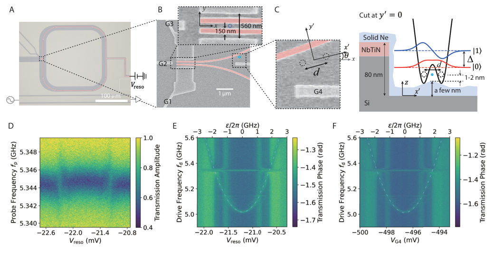
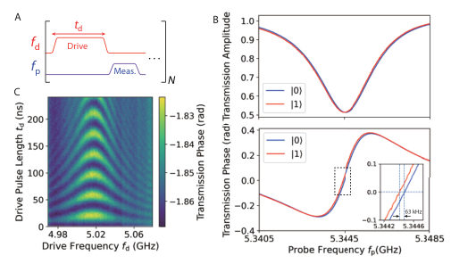
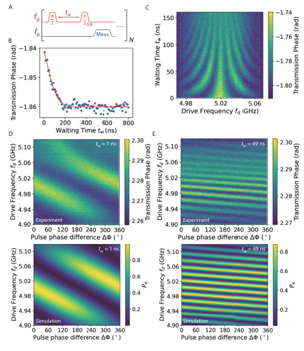
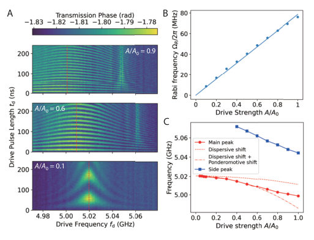
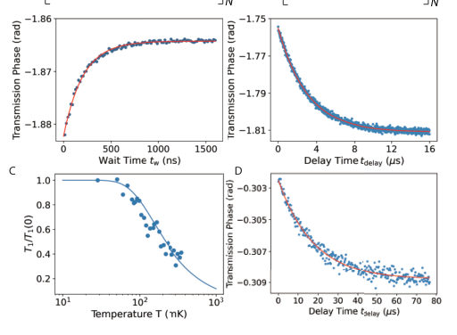
Summary. This paper reports on the experimental realization and characterization of a charge qubit using an electron trapped on solid neon coupled to a superconducting resonator. The researchers demonstrated coherent control, measured high Rabi frequencies, and analyzed frequency shifts caused by strong microwave driving. The results strongly suggest that this platform is viable for future spin-qubit quantum computation.
Why it may be interesting. This work directly addresses the experimental realization of solid-state qubits, combining concepts from circuit QED, solid-state physics, and quantum control, making it highly relevant for AMO and quantum computing researchers.
Main problem. The research aims to demonstrate and characterize the coherent control of a charge qubit realized using an electron trapped on solid neon, with the ultimate goal of realizing a functional spin-qubit platform.
Main result. The authors successfully demonstrated microwave readout and coherent control, achieving Rabi frequencies up to 76 MHz and estimating that spin-qubit fidelities approaching 99.5% are feasible.
Method. The study employs microwave spectroscopy, Rabi oscillation measurements, and coherence time characterization (Hahn-echo) on a superconducting circuit QED platform.
Model / system. The system consists of a single electron confined in a double-well potential on solid neon, coupled to a superconducting NbTiN nanowire resonator. The qubit Hamiltonian describes the orbital energy splitting, and the coupling allows for state readout via resonator frequency shifts.
Key observables. Rabi frequencies (up to 76 MHz), qubit frequency shifts (due to nonlinear/ponderomotive effects), coherence times ($T_2^*, T_2$), and single-qubit gate fidelities.
Important parameters / regimes. Coupling strength ($g \approx 2.1 ext{ MHz}$), resonator frequency ($ ext{fr} \approx 5.3 ext{ GHz}$), and the achievable fidelity ($\approx 99.5\%$).
Assumptions / limitations. Deterministic electron trapping is difficult due to surface roughness, and the analysis relies on fitting resonator response to infer electron position and coupling parameters.
Figures summary. Figures illustrate device structures, potential energy diagrams (double-well), Rabi oscillation measurements vs. drive strength, and frequency shifts attributed to dispersive and ponderomotive effects.
Paper structure. The paper progresses from demonstrating basic charge qubit control and readout, to characterizing coherence times, analyzing frequency shifts under strong driving (dispersive/ponderomotive effects), and finally projecting these results onto the feasibility and fidelity of a spin-qubit realization.
Electrons floating in vacuum provide a clean platform for quantum information processing due to their isolation from material defects; electrons on solid neon have emerged as a promising qubit platform for its long coherence times. Here, toward spin-qubit realization, we couple a single electron on solid neon to a magnetic-field-compatible superconducting NbTiN nanowire resonator. We realize a charge qubit and demonstrate microwave readout and coherent control, with Rabi frequencies up to 76 MHz, an order of magnitude larger than in previous studies. Under strong driving, we observe a qubit frequency shift from nonlinear interactions with the intense microwave field. Deterministic electron trapping at an intended position remains challenging due to solid neon surface roughness; we characterize the electron's position from its differential coupling to distinct electrodes. Although not trapped at an intended position, our estimates indicate that spin-qubit demonstrations remain feasible.
Authors: Verena Yacoub, Niraj Kumar, Iordanis Kerenidis, Eleni Diamanti
Type: experiment · Category: quantum information and computing · PDF: https://arxiv.org/pdf/2605.31516v1
Analysis basis: full PDF text, analyzed in chunks
Topic relevance: 🔥 QC/QI experiment 4/5 · interference shaping light 3/5 · quantum optics experiment 3/5 · analog quantum simulation 1/5 · entanglement & information structure 1/5 · quantum measurements 1/5
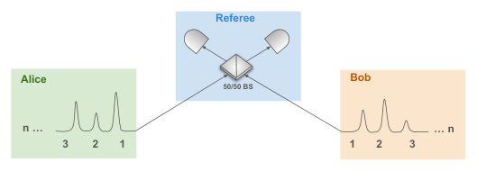
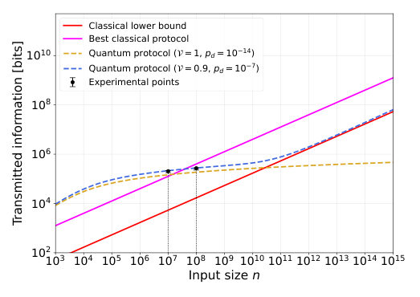
Summary. This work experimentally proves a quantum advantage for calculating the Euclidean distance in a communication complexity setting using photonic quantum states. By encoding real-valued data into coherent pulse amplitudes, the authors achieved a quantum advantage factor of $\approx 1.48$ for $n=10^8$ compared to classical bounds. The demonstration validates the potential of quantum communication protocols for practical data processing tasks.
Why it may be interesting. It provides a concrete, large-scale experimental realization of a quantum advantage in a fundamental information-theoretic task (communication complexity) using photonic systems, which is highly relevant to quantum communication research.
Main problem. The paper experimentally demonstrates a quantum advantage in communication complexity for calculating the Euclidean distance between two high-dimensional real vectors.
Main result. A quantum advantage was shown for an input size of $10^8$, where the quantum protocol achieved a transmitted information rate significantly surpassing the best known classical protocol bound.
Method. The protocol uses quantum fingerprinting adapted for real-valued vectors, implemented via weak coherent pulse trains interfering on a beam splitter.
Model / system. The experiment utilizes an interferometric setup with superconducting nanowire single-photon detectors (SNSPDs) to encode non-binary data in the amplitudes of coherent states.
Key observables. Estimated Euclidean distance ($ ilde{E}$), quantum transmitted information ($I_Q$), and the quantum advantage factor ($A_{best}$).
Important parameters / regimes. Input size ($n$) up to $10^8$; mean photon number ($\mu$) tuned in the range of $10^{-5}$ to $10^{-4}$; visibility ($ u$) and detector quantum efficiency ($\eta$).
Assumptions / limitations. The analysis relies on the weak-pulse approximation and the use of the private-coin simultaneous message passing (SMP) model.
Figures summary. Figures show histograms confirming the estimated Euclidean distances for random and grayscale image inputs, verifying the results within a specified error bound.
Paper structure. The paper builds from the theoretical background of communication complexity and quantum fingerprinting, derives the necessary bounds (Chernoff/Gaussian), details the experimental implementation using coherent states, and concludes with the quantitative demonstration of the quantum advantage.
When considering the complexity of communication protocols, the aim is to perform a certain task with the minimum amount of communication resources, such as time and transmitted information. The use of quantum states may lead to an exponential advantage in the use of such resources. Here, we are interested in the task of calculating the Euclidean distance between two vectors representing real data sets. It has been previously shown that it is possible to obtain an advantage for this task based on quantum fingerprinting. This protocol is defined in the simultaneous message passing model of communication complexity, where the two parties do not communicate with each other but send data to a third party, and exploits practical fingerprints generated using trains of coherent state pulses instead of highly entangled qubit states that are hard to generate for large input sizes needed to demonstrate an exponential advantage. We perform a proof-of-principle experimental demonstration of the Euclidean distance protocol using amplitude modulation techniques for encoding non-binary data sets and high-performance superconducting nanowire single-photon detectors required to increase the accessible input size. We show a quantum advantage in transmitted information surpassing the best classical protocol for an input size of $10^8$, for diverse types of data sets, including those corresponding to real grayscale images, and with reasonable precision and error bounds. Our results highlight the potential of quantum communication complexity for use in a broad set of applications.
Authors: Jessica Park, Susan Stepney, Irene D'Amico
Type: both · Category: quantum information and computing · PDF: https://arxiv.org/pdf/2605.30935v1
Analysis basis: full PDF text, analyzed in chunks
Topic relevance: 🔥 QC/QI experiment 4/5 · analog quantum simulation 3/5 · quantum optics experiment 3/5 · interference shaping light 2/5
Summary. This work benchmarks using boson sampling on a physical photonic interferometer (PT-2) to solve the Minimum Dominating Set problem. The authors compare this quantum approach against several classical algorithms, finding that current performance is limited by insufficient sampling resources. The study is important for guiding future hardware development by identifying the necessary scaling of resources for quantum advantage.
Why it may be interesting. It provides a concrete, near-term benchmark for quantum advantage by applying boson sampling to a known hard problem, directly relevant to photonic quantum computation.
Main problem. The paper benchmarks the use of boson sampling, implemented on a physical quantum device, to solve the NP-hard Minimum Dominating Set problem.
Main result. While the boson sampler is currently outperformed by classical algorithms with limited resources, the study validates the simulation process and suggests that performance will improve as hardware complexity and loss are reduced.
Method. The authors compare the results of the Binary Bosonic Solver (BBS) on the physical PT-2 device against established classical heuristics and exact solvers.
Model / system. The experiment uses the physical PT-2 time-bin interferometer from ORCA Computing, which samples from non-Gaussian squeezed states. The problem solved is the Minimum Dominating Set problem on a graph $G(n, p, s)$.
Key observables. Best found solution quality (size of the dominating set) and overall wall-clock runtime.
Important parameters / regimes. The number of samples ($N_{Samp}$) and iterations ($N_{Iter}$) are critical parameters whose insufficient values are hypothesized to limit current performance.
Assumptions / limitations. The primary assumption is that the current performance gap is due to insufficient sampling and iteration counts, not a fundamental limitation of the quantum approach.
Figures summary. Figures compare runtimes across various methods, show the scaling of unique cost function evaluations, and compare simulated vs. real hardware sampling times for the interferometer.
Paper structure. The paper introduces the problem and platform, details the comparison between the quantum (BBS) and classical solvers, presents results comparing solution quality and runtime, and concludes with recommendations for future resource scaling.
We use boson sampling as part of a gradient-free variational algorithm (the Binary Bosonic Solver) to solve a minimum dominating set problem and compare these results to a number of exact and heuristic classical algorithms. The boson sampling has been performed on the physical PT-2 time-bin interferometer from ORCA Computing. The PT-2 device has been tested here using both a single- and double-loop configuration and the results are compared based on the best found solution and the overall run time. With the parameters used in this experiment, the boson sampler is outperformed by the classical methods, but we hypothesise that this is due to insufficient samples and iterations. We classically simulate boson sampling in a single-loop configuration to break down the runtime for individual algorithmic components, allowing for estimates of when boson sampling may outperform classical methods. This study recommends a watching brief on boson sampling as the complexity of the interferometer is improved and the loss in the hardware is reduced allowing for better performance from the associated algorithms.
Authors: Siddharth Jindal, Pavan Hosur
Type: theory · Category: statistical mechanics · PDF: https://arxiv.org/pdf/2605.30798v1
Analysis basis: full PDF text, analyzed in chunks
Topic relevance: 🔥 entanglement & information structure 4/5 · non-equilibrium dynamics 3/5 · non-equilibrium universality 2/5 · scars & prethermalization 2/5 · analog quantum simulation 1/5
Summary. This work develops a generalized framework for thermalization in quantum systems with non-Abelian symmetries, extending the ETH concept. By comparing non-Abelian microcanonical entropy to entanglement entropy, the authors derive universal logarithmic corrections that quantify the intrinsic entanglement associated with symmetry constraints. This advances our understanding of how local quantum information relates to global thermodynamic properties in complex many-body systems.
Why it may be interesting. It provides a rigorous theoretical framework for understanding thermalization in complex, interacting quantum systems where simple conservation laws are insufficient, directly impacting the understanding of quantum chaos and thermalization in strongly interacting regimes.
Main problem. The paper extends the Eigenstate Thermalization Hypothesis (ETH) to quantum many-body systems possessing non-Abelian symmetries, aiming to understand how thermalization occurs when multiple non-commuting conserved charges are present.
Main result. The non-Abelian microcanonical entropy is shown to be closely related to the symmetry-resolved entanglement entropy, with conventional entanglement entropy differing by a universal logarithmic correction dependent on the charge density regime.
Method. The analysis employs non-Abelian symmetry resolution techniques, utilizing the replica trick and advanced techniques from representation theory (like the Wigner-Eckart theorem) to calculate entropy measures.
Model / system. The study considers general quantum many-body systems with symmetries described by compact Lie groups (e.g., SU(2)), using the N-site next-neighbor Heisenberg chain as a prototypical model.
Key observables. Non-Abelian microcanonical entropy, symmetry-resolved entanglement entropy, conventional entanglement entropy, and the global Casimir charge.
Important parameters / regimes. Finite and zero charge density regimes, and the global Casimir charge (e.g., total spin).
Assumptions / limitations. The analysis relies on the concept of simple reducibility and assumes the applicability of the Non-Abelian ETH ansatz.
Figures summary. Figures illustrate the scaling of the squared Clebsch-Gordan coefficients and the relationship between different entropy measures in various polarization regimes.
Paper structure. The paper develops the theory by first establishing the non-Abelian ETH, then calculating the non-Abelian microcanonical entropy using replica methods, and finally comparing this result to entanglement entropy measures to quantify the logarithmic corrections.
The eigenstate thermalization hypothesis (ETH) posits that energy eigenstates encode local properties of the microcanonical ensemble. Motivated by recent interest in the physics of non-commuting conserved charges and the non-Abelian ETH, we study chaotic eigenstates in the presence of symmetries described by general compact Lie groups, such as SU(2). By applying non-Abelian symmetry resolution, we develop a non-Abelian microcanonical entropy and relate this entropy to the entanglement entropy of chaotic eigenstates. We find that microcanonical entropy is closely related to the symmetry-resolved entanglement entropy, which differs from conventional entanglement entropy by a universal logarithmic correction. Our results depend on the global Casimir charge, e.g. total spin. At finite charge density, we find a logarithmic enhancement to conventional entanglement entropy. At zero density, we find no such correction to entanglement entropy, but a logarithmic reduction to microcanonical entropy and symmetry-resolved entanglement entropy. We discuss the implications of our approach for non-Abelian eigenstate thermalization.
Authors: P. C. van de Graaf, H. T. C. Stoof
Type: theory · Category: quantum gases · PDF: https://arxiv.org/pdf/2605.30540v1
Analysis basis: full PDF text, analyzed in chunks
Topic relevance: 🔥 entanglement & information structure 4/5 · analog quantum simulation 3/5 · Keldysh / 2PI / non-Gaussian methods 2/5 · methods for driven-dissipative 2/5 · non-equilibrium dynamics 1/5
Summary. This work develops a method to calculate the entanglement entropy for an acoustic black hole analogue in a Bose-Einstein condensate. The authors demonstrate that due to long-distance correlations induced by the horizon, the entanglement entropy scales with volume rather than the expected area law. This result connects condensed matter physics phenomena to fundamental concepts in quantum gravity.
Why it may be interesting. It provides a concrete, solvable analogue system (BEC) to study fundamental concepts from quantum gravity, such as Hawking radiation and entanglement entropy scaling laws (area vs. volume law).
Main problem. The paper computes the entanglement entropy of an acoustic black hole analogue system.
Main result. The entanglement entropy exhibits a volume law scaling far from the horizon, which is well approximated by the local thermal entropy of the outgoing Hawking radiation.
Method. The calculation uses the correlator method for Gaussian states, involving mode-function decomposition and solving Bogoliubov-de Gennes equations.
Model / system. The system is an acoustic black hole realized in a superfluid Bose-Einstein condensate, governed by fluctuations described by a modified Heisenberg equation.
Key observables. Entanglement entropy ($S_E$), density-density correlation function, and outgoing phonon occupation numbers.
Important parameters / regimes. The local healing length ($\xi$) acts as the natural Planck scale; the analysis depends on the transsonic flow regime at the horizon.
Assumptions / limitations. The analysis relies on Bogoliubov theory and assumes the system can be treated as a continuum or a tight-binding model approximation.
Figures summary. Figures illustrate the acoustic black hole setup, dispersion relations showing supersonic/subsonic regions, and plots comparing entanglement entropy scaling (logarithmic vs. volume law) against subsystem size.
Paper structure. The paper develops the theory by first setting up the Hamiltonian and solving the Bogoliubov equations, then calculating particle creation via scattering theory, and finally applying the correlator method to derive the entanglement entropy scaling laws.
We introduce a method to numerically compute the entanglement entropy of an acoustic black hole. It is shown that the entanglement entropy of sufficiently large subregions scales linearly with size and thus shows a volume law instead of an area law. The origin of this scaling can be traced back to the non-separable long-distance correlations due to the production of phonon pairs at the horizon. The system is shown to be locally thermal, such that the part of the entanglement entropy scaling with volume is well approximated by the thermal entropy of the outgoing Hawking radiation.
Authors: Chengyu Fang, Minjeong Kim, Mark Saffman, Jennifer T. Choy, Mikhail Kats
Type: both · Category: other · PDF: https://arxiv.org/pdf/2605.30498v1
Analysis basis: full PDF text, analyzed in chunks
Topic relevance: 🔥 QC/QI experiment 4/5 · analog quantum simulation 3/5 · interference shaping light 3/5 · quantum optics experiment 2/5
Summary. This review argues that optical metasurfaces are crucial for advancing neutral-atom quantum technologies by overcoming the scaling limitations of existing optical devices. They enable the creation of massive, highly controllable arrays of optical traps, such as bottle-beams, which are necessary for utility-scale quantum computing. The integration of metasurfaces promises to miniaturize and simplify complex atomic trapping setups.
Why it may be interesting. This work directly addresses the hardware limitations for building large quantum simulators or quantum computers based on neutral atoms, bridging the gap between fundamental quantum physics and practical quantum engineering.
Main problem. Scaling neutral-atom arrays to the millions of sites required for utility-scale quantum computing presents a major engineering challenge.
Main result. Optical metasurfaces are presented as a highly scalable enabling technology that surpasses the pixel limitations of active devices like SLMs for generating complex, large-scale optical trap arrays.
Method. The authors review and propose using metasurfaces to generate optical tweezers and complex trapping profiles, comparing this approach against traditional active and passive optical components.
Model / system. The system involves trapping neutral atoms (e.g., for quantum computing) using light fields generated by optical metasurfaces. These metasurfaces provide subwavelength control over the phase, amplitude, and polarization of light.
Key observables. Trap site count (scaling to hundreds of thousands or millions), phase/amplitude/polarization control, and diffraction efficiency.
Important parameters / regimes. Pixel count (bottleneck for SLMs), trap array size (millions of sites), and operational bandwidth.
Assumptions / limitations. The primary assumption is that metasurfaces can effectively replace multiple complex optical components, enabling miniaturization and high scalability.
Figures summary. Figures illustrate the comparison of scaling capabilities between SLMs and metasurfaces, and demonstrate the generation of complex 3D trapping profiles like optical bottle-beams using metasurfaces.
Paper structure. The paper structure moves from identifying the scaling bottleneck in current trapping methods (SLMs, MLAs) to proposing metasurfaces as the superior solution, detailing their capabilities for complex beam shaping and integration.
Trapped neutral atoms are one of the leading platforms for quantum information technologies, in particular for quantum computing, but scaling them to array sizes needed for utility-scale quantum computing is a major engineering challenge. Here we review optical metasurfaces as an enabling technology that provides fine control over the phase, amplitude, and polarization of light, with pixel counts far exceeding what is available with spatial light modulators (SLMs) and other active devices. The large pixel counts have recently led to demonstrations of arrays of optical tweezers with hundreds of thousands of sites and arrays of optical bottle-beams with complex three-dimensional trapping profiles. The flexibility and scalability of optical metasurfaces provides a route towards miniaturized, integrated, and highly scalable atomic experiments and instruments.
Authors: Yaoming Chu, Baiyi Yu, Hartmut Häffner, Markus Heyl, Nathan Goldman, Jianming Cai
Type: both · Category: other · PDF: https://arxiv.org/pdf/2605.31442v1
Analysis basis: full PDF text, analyzed in chunks
Topic relevance: 🔥 QC/QI experiment 4/5 · entanglement & information structure 2/5 · Rydberg arrays 1/5 · analog quantum simulation 1/5
Summary. This paper introduces Engineered Random States (ERSs) as a universal resource for quantum metrology, proving that superior precision scaling (Heisenberg limit) is statistically generic across exponentially large Hilbert spaces. The theoretical framework uses random unitary ensembles to calculate the average Quantum Fisher Information, which is experimentally validated on a trapped-ion quantum processor, demonstrating a significant metrological enhancement.
Why it may be interesting. This work provides a powerful, general paradigm showing that quantum enhancement can be accessed robustly from the vast, complex structure of high-dimensional quantum systems, directly applicable to trapped-ion and superconducting circuit platforms.
Main problem. The core challenge is overcoming the exponential scaling barrier of the many-body Hilbert space to achieve quantum-enhanced metrology.
Main result. The authors demonstrate that quantum advantage (Heisenberg-limited scaling) can be a statistically generic property of Engineered Random States (ERSs) generated by random unitaries.
Method. The analysis uses ensemble averaging over random unitary ensembles ($\alpha$-random unitaries) to calculate the average Quantum Fisher Information ($ ext{QFI}$), confirming the scaling theoretically and experimentally.
Model / system. The work analyzes quantum systems of $N$ particles, focusing on ERSs generated by random unitaries, and validates the findings using a trapped-ion processor platform.
Key observables. Quantum Fisher Information ($ ext{QFI}$), metrological gain (in dB) beyond the Standard Quantum Limit (SQL), and the ensemble average $\mathbb{E}[F_Q]$.
Important parameters / regimes. The randomness parameter $\alpha$, the number of particles $N$, and the degree of disorder $\Delta$.
Assumptions / limitations. The analysis relies heavily on the concentration-of-measure phenomenon in high-dimensional spaces to prove that the average scaling holds for most states.
Figures summary. Figures compare metrological gain across the vast Hilbert space vs. the symmetric subspace; simulations show $ ext{QFI}$ density following $\mathbb{E}[f_Q] = N/4$; and the experiment shows a $6.98 \pm 0.38$ dB gain on a trapped-ion processor.
Paper structure. The paper systematically develops the theory by first establishing the $ ext{QFI}$ scaling using $\alpha$-random unitaries (Theory), then analyzing specific state constructions like Random Phase States and Chimera-superposition states (Theory), and finally validating the framework using random quantum circuits on a trapped-ion platform (Experiment).
The exponential growth of many-body Hilbert space presents a fundamental barrier to quantum technology, obscuring the search for physically significant states within an astronomically vast landscape. Consequently, resources for quantum-enhanced metrology have been largely confined to the symmetric subspace whose dimensionality scales only polynomially with the particle number-leaving the vast majority of the Hilbert space largely unexplored and poorly understood. Here we challenge this paradigm by demonstrating that metrological advantage can arise as a ubiquitous feature across exponential-dimensional manifolds. By tailoring the first-moment structure of random unitaries, we uncover dense manifolds of engineered random states (ERSs) where Heisenberg-limited scaling emerges as a statistically generic property. This ubiquity endows these resource states with inherent resilience against parameter disorder. We experimentally validate this framework on a trapped-ion processor, achieving a metrological enhancement of $6.98 \pm 0.38$ dB beyond the standard quantum limit. Potential applications extend to diverse platforms, ranging from superconducting circuits and waveguide QED to solid-state spins and polar molecules. Our results establish a powerful paradigm where quantum-enhanced precision can be harvested from the exponential vastness of the Hilbert space.
Authors: Alexandru Gheorghiu
Type: theory · Category: quantum information and computing · PDF: https://arxiv.org/pdf/2605.31448v1
Analysis basis: full PDF text, analyzed in chunks
Topic relevance: 🔥 entanglement & information structure 4/5 · analog quantum simulation 3/5 · non-equilibrium dynamics 1/5
Summary. This paper constructs 'pseudoentangled' quantum states using shallow, local circuits whose entanglement structure is hard for quantum computers to measure. By mapping these states to local Hamiltonians, the authors prove that determining the ground state entanglement structure of 1D and 2D quantum systems is quantumly hard, provided certain cryptographic assumptions hold.
Why it may be interesting. This work provides a powerful tool to establish computational hardness for characterizing the ground state properties of quantum many-body systems, which is crucial for understanding the limits of quantum simulation and quantum phase detection.
Main problem. The paper aims to construct quantum states whose entanglement structure is computationally hard to determine (pseudoentanglement), thereby separating this property from pseudorandomness in the shallow-circuit regime.
Main result. It constructs families of 2D-local, constant-depth quantum circuits whose output states exhibit a large, non-negligible gap in entanglement entropy across a fixed cut, demonstrating quantum hardness for learning the entanglement structure of local Hamiltonians.
Method. The construction relies on the quantum intractability of the Dense-Sparse Learning Parity with Noise problem, utilizing a perfect randomized encoding of a linear map to generate the pseudoentangled states.
Model / system. The model involves 2D-local, constant-depth quantum circuits acting on qubits, which are then mapped to local Hamiltonians on 1D and 2D lattices for physical applications.
Key observables. Entanglement Entropy (specifically the gap $\Delta(n)$ across a fixed cut $W$), and the spectral gap of the resulting Hamiltonians.
Important parameters / regimes. Circuit Depth (constant depth), System Size ($n$), and the gap size ($\Delta(n) = \omega(\log n)$).
Assumptions / limitations. The primary assumption is the intractability of the Dense-Sparse LPN problem for quantum polynomial-time (QPT) adversaries.
Figures summary. Figures schematically illustrate the 2D layout of the randomized encoding and the local implementation of a single plaquette, detailing how the output bits depend on input masks and neighboring bits.
Paper structure. The paper builds from cryptographic preliminaries (randomized encoding) to the main pseudoentanglement theorem, and finally applies this result to prove quantum hardness for learning the entanglement structure of ground states of 1D and 2D local Hamiltonians.
We construct a family of 2D-local constant-depth quantum circuits that output states whose entanglement entropy across a specified cut cannot be estimated in quantum polynomial time. As constant-depth quantum circuits can be learned from polynomially many quantum samples, our resulting pseudoentangled states are implicitly public-key and not pseudorandom. This separates pseudoentanglement from pseudorandomness in the shallow-circuit regime: the former is possible, while the latter is not. The construction is based on the quantum intractability of the Dense-Sparse Learning Parity with Noise problem introduced in [DJ25] and uses a bounded-fan-in, bounded-fan-out classical randomized encoding for linear maps $\mathbf{x} \mapsto \mathbf{Mx},$ which could be of independent interest. As applications, we obtain quantum hardness for the problem of learning the entanglement structure (across a fixed cut) of the ground-state of 1D and 2D local Hamiltonians. The 1D Hamiltonian has an inverse polynomial gap, whereas the 2D one has a constant gap. This complements the result of [BZZ24] that showed only factoring-based hardness for the 1D case, though achieving a volume versus area entanglement difference.
Authors: Germán D. Díaz Agreda, Jhon Alejandro Andrade Hoyos, Carlos A. Durán Paredes, Sebastián Cajas Ordoñez, Noah Dane Hebdon, Siong Thye Goh, Dax Enshan Koh
Type: experiment · Category: quantum information and computing · PDF: https://arxiv.org/pdf/2605.30676v1
Analysis basis: full PDF text, analyzed in chunks
Topic relevance: 🔥 QC/QI experiment 4/5
Summary. This work experimentally tests the Quantum Volunteer's Dilemma on NISQ hardware to quantify quantum advantage under noise. The results show that while the aggregate payoff remains quantum-enhanced, the fidelity of the desired quantum state degrades rapidly, limiting observable advantage to smaller system sizes. The study critically compares hardware performance against idealized noise models, highlighting the need for advanced error mitigation.
Why it may be interesting. It provides a concrete, game-theoretic testbed for assessing the practical limits of quantum advantage in the presence of realistic, non-ideal hardware noise, which is crucial for developing fault-tolerant quantum algorithms.
Main problem. To experimentally determine if a quantum advantage exists in the multiplayer Quantum Volunteer's Dilemma when implemented on noisy intermediate-scale quantum (NISQ) hardware.
Main result. The global average payoff robustly exceeds the classical Nash equilibrium across the tested range, demonstrating aggregate quantum advantage despite noise. However, the practical observability of state-level advantage is limited to $N \le 8$ under readout correction.
Method. The study uses experimental measurements on superconducting quantum processors, comparing raw data against readout-corrected results and a theoretical 'Digital Twin' simulation.
Model / system. The system is the multiplayer Quantum Volunteer's Dilemma, implemented using the EWL quantization protocol on the ibm_kingston NISQ backend. The analysis systematically varies the number of players ($N=2$ to $9$) and transpiler optimization levels.
Key observables. Target-state fidelity, global average payoff, and the comparison against the classical Nash equilibrium payoff.
Important parameters / regimes. Number of players ($N$), readout error correction effectiveness, and the transition point where single-qubit errors give way to multi-qubit contributions ($N \approx 6$).
Assumptions / limitations. The Digital Twin model assumes first-order, independent per-qubit noise channels, which fails to capture higher-order effects like crosstalk or temporal drift at large $N$.
Figures summary. Figures compare target-state fidelity decay across different noise mitigation levels and show the comparison between target-state weighted payoff and the global average payoff relative to classical benchmarks.
Paper structure. The paper follows a structure of problem definition (Quantum Volunteer's Dilemma), methodology (NISQ implementation, error mitigation, Digital Twin comparison), results presentation (fidelity decay, payoff analysis), and concluding discussion on the limits of quantum advantage observability.
We present an experimental implementation of the multiplayer Quantum Volunteer's Dilemma on noisy intermediate-scale quantum (NISQ) hardware, executed on the ibm_kingston backend via Qiskit Runtime. The game is evaluated for N = 2 to 9 players under four transpiler optimization levels, with 20 independent repetitions per configuration and 2048 shots per circuit, including post-processing readout error correction via mthree. Target-state fidelity decays with system size but remains above 70% (corrected) through N = 9. With readout correction, the global average payoff reproduces the quantum theoretical benchmark exactly for N <= 6 and exceeds the classical Nash equilibrium across the full tested range. Optimization level 2 is selected as the reference configuration after gate count analysis reveals that levels 2 and 3 produce identical transpiled circuits, with level 2 achieving superior fidelity stability. A Hamming distance analysis of raw measurement counts shows that single-qubit errors dominate at small N, with multi-qubit contributions growing beyond N = 6. A calibration-based digital twin captures global payoff trends but exhibits a linear fidelity decay profile that diverges from the hardware behavior at large N, exposing the limits of first-order independent per-qubit noise models. These results demonstrate that aggregate quantum advantage in multiplayer games is robust to NISQ noise conditions across the full tested range, while the practical observability of state-level advantage is constrained to N <= 8 under post-processed readout correction.
Authors: Charlie Nation, Rick P. A. Simon, Shreya Banerjee, Francesco Martini, Alessandro Ricottone, Federico Cerisola, Luca Dellantonio
Type: theory · Category: quantum information and computing · PDF: https://arxiv.org/pdf/2605.30428v1
Analysis basis: full PDF text, analyzed in chunks
Topic relevance: correlated / nonlocal dissipation 3/5 · driven-dissipative phase transition 3/5 · methods for driven-dissipative 3/5 · Keldysh / 2PI / non-Gaussian methods 2/5 · analog quantum simulation 2/5 · non-equilibrium dynamics 2/5 · non-equilibrium universality 2/5 · Kondo & dissipative impurity 1/5 · correlated cavity matter 1/5 · entanglement & information structure 1/5
Summary. This paper develops a general algorithmic approach to find Clifford symmetries in qudit systems by reformulating the problem as a Graph Automorphism (GA) problem. It constructs a graph based on Pauli commutation invariants and uses advanced search heuristics like WL refinement and MRV to find the symmetries. The method is robust enough to handle both closed Hamiltonians and open Liouvillian dynamics.
Why it may be interesting. This work provides a powerful, general algorithmic framework for characterizing symmetries in complex quantum models, which is crucial for understanding conserved quantities and simplifying the analysis of quantum dynamics in both closed and open settings.
Main problem. The paper addresses the theoretical challenge of finding Clifford symmetries for quantum systems, which is mapped to a computationally hard Graph Automorphism (GA) problem.
Main result. An algorithm is presented that successfully finds these symmetries for general qudit systems, extending the formalism from closed Hamiltonians to open Liouvillian systems.
Method. The core method involves constructing a colored, edge-labeled graph based on the Pauli commutation relations and encoding the symmetry search as finding a graph automorphism that preserves these invariants.
Model / system. The work applies to general qudit systems, covering both closed systems described by Hamiltonians (e.g., Toric Code, TFI) and open systems governed by GKSL master equations.
Key observables. Clifford symmetries ($\hat{S}$), graph automorphisms ($\Pi$), Pauli commutation relations ($\langle \vec{p}_i, \vec{p}_j angle$), and phase correction vectors ($\vec{\phi}$).
Important parameters / regimes. The local dimension $d$ of the qudits, the number of qudits $n$, and the structure of the Hamiltonian/Liouvillian.
Assumptions / limitations. The search relies on mapping the symmetry problem to GA, which is computationally intensive, and the phase correction step requires careful handling beyond the pure graph structure.
Figures summary. Figures illustrate the time scaling of symmetry finding for various models (Random Pauli, TFI, Heisenberg XXZ, Toric Code) comparing different search heuristics (MRV vs. bliss).
Paper structure. The paper builds from establishing the GA mapping for symmetries, detailing the graph construction using Pauli invariants, refining the search using WL coloring and MRV heuristics, and finally extending the formalism to open systems and specific physical examples like the ladder structure.
In the recent article [arXiv:2605.18966], we demonstrated that finding Clifford symmetries can be mapped to a Graph Automorphism (GA) problem. Here, we provide an algorithm to obtain such symmetries on general qudit systems, that works on the principle of encoding Clifford invariants of a Hamiltonian onto properties of a graph. Labelling Hamiltonian terms as vertices, a permutation of such vertices that respects the Clifford invariants (a GA) is both a valid Clifford, and a symmetry up to phase correction checks. We test this on multiple physical models and discuss the scaling with respect to the number of qudits and Pauli strings, as well as various strategies for optimisation in different regimes. We further show that the graph automorphism representation of Clifford symmetries can be expanded to open quantum systems.